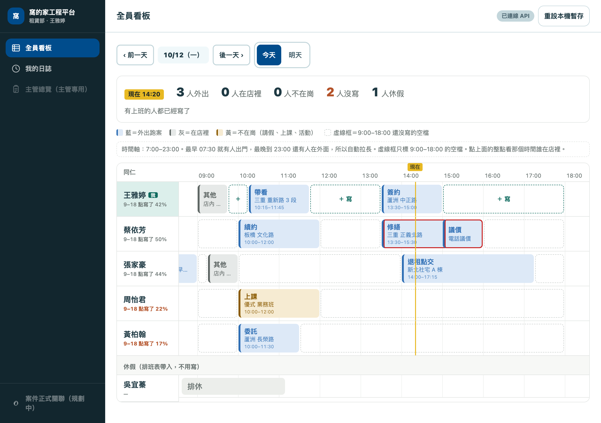

工作日誌看板｜管理員版說明
給瓊安、小吳哥、主管看。說明裡的名字和行程都是假的。上方可以切到「同仁看到的版本」。
一句話：打開主管連結，最上面一行就告訴你「現在幾個人外出、幾個人在店裡、誰今天一筆都還沒寫」。要派人時，點時間軸上的整點，看誰在店裡。
1. 從哪裡打開
1
用主管連結打開（Ragic 上方「工作日誌」→「工作日誌_主管」）。主管連結看得到全部人，不要轉給同仁。
2
一打開就是全員看板。左邊（手機在下方）有四個入口：
| 入口 | 拿來做什麼 |
|---|---|
| 全員看板 | 一眼看全部人今天在哪、誰沒寫。同仁也看得到這一頁 |
| 我的日誌 | 自己填寫用（主管不在看板名單上，這頁平常用不到） |
| 主管總覽 | 只有主管看得到。一人一張卡片，展開看每一筆的完整內容（預先排定、紀錄內容）。看板看全貌，總覽看細節 |
| 使用說明 | 就是這一頁 |
2. 看板上每一塊是什麼
| 位置 | 意思 |
|---|---|
| 最上面那行 | 現在外出／在店裡／不在崗／沒寫／休假各幾人。下面紅字是「今天 9:00–18:00 一筆都還沒寫」的名單——催人就看這裡 |
| 名字下的百分比 | 9 點到 18 點寫了多少。低於 40% 變紅。看板照這個排序，寫越多越上面 |
| 藍色 | 外出跑案：開發、委託、帶看、簽約、修繕、續約、議價、退租點交 |
| 灰色 | 在店裡：上廣告、其他 |
| 黃色 | 不在崗：請假、休假、上課、活動 |
| 虛線框 | 9:00–18:00 還沒寫的空檔 |
| 紅框 | 同一個人兩段時間重疊 |
| 最下面「休假」區 | 排班表上當天排休、特休、請假的人，自動沉底、不算沒寫 |

3. 要派人：這個時間找誰？
點看板上方的整點（例如「14:00」），會跳出：
| 分組 | 意思 |
|---|---|
| 在店裡 | 那個時間寫的是灰色項目，可以找 |
| 不知道（沒寫） | 那個時間沒填，要打電話問 |
| 走不開 | 外出跑案或不在崗，旁邊寫他在做什麼 |
再點一次同一個整點，或按「收起來」，就回到看「現在」。
看別天：看板上方「‹ 前一天」「後一天 ›」，或直接按「今天」「明天」。明天的看板＝同仁先排好的行程，可以拿來預先派案；往回最多看 90 天。
4. 誰看得到什麼、誰能改誰的
| 誰 | 看得到 | 能改 |
|---|---|---|
| 租賃部同仁 | 全員看板（全部人的時段、項目、案名） | 只有自己，而且只有今天和明天 |
| 主管連結 | 全員看板＋主管總覽（每一筆完整內容） | 不能改同仁的紀錄 |
| 任何人 | — | 昨天以前的紀錄都鎖住不能改，保留當天的真實狀況 |
5. 人員異動要做什麼
| 情況 | 要做的事 | 找誰 |
|---|---|---|
| 新同仁到職（租賃部承攬） | Ragic 人事表填好後，他會自動出現在看板上，但要有專屬連結才能填，不然會一直顯示沒寫 | 跟工程師說「幫某某開工作日誌連結」，工程師開好並掛進 Ragic 選單 |
| 同仁離職 | 人事表改「離職」，隔天就從看板消失，舊紀錄都留著 | 照平常人事流程，看板不用另外處理；要停掉他的連結找工程師 |
| 同仁轉兼職 | 人事表改「兼職」，隔天就從看板消失（兼職不用填） | 同上 |
| 排休、特休、請假 | 照常排在排班表，看板自動沉底 | 不用另外做 |
| 某個項目顏色分錯、要加部門 | 改設定 | 找工程師 |
6. 常見問題
| 問題 | 答案 |
|---|---|
| 某人明明有上班，卻不在看板上 | 查 Ragic 人事表：部門要是租賃部、在職、聘雇類別是承攬 |
| 某人今天請假，卻顯示沒寫 | 排班表當天沒有他的排休／特休／請假，補進排班表就會沉底 |
| 同仁說連結打不開 | 請他從 Ragic 選單「工作日誌_他的名字」重新點；還不行找工程師 |
| 資料存在哪 | Ragic 原本那張「工作日誌」表，舊紀錄都在 |
| 同仁第一次打開會看到什麼 | 4 步引導（這排是你的→點虛線空格就能填→顏色代表什麼→大家都看得到、只能改自己的），之後可在「使用說明」重看 |